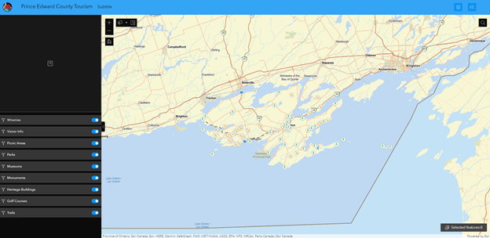
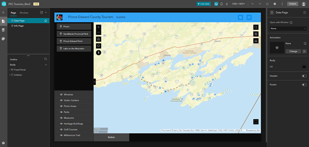
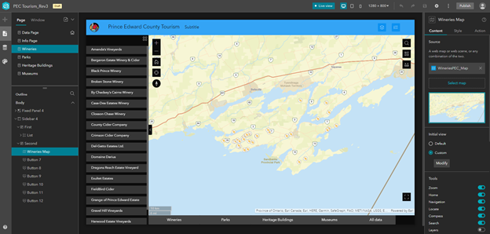
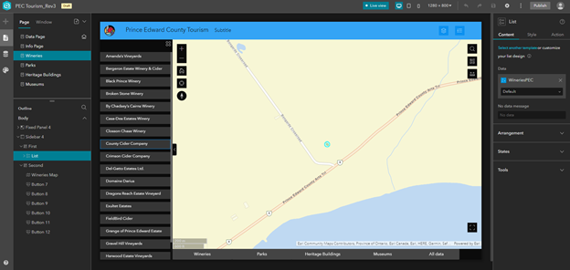
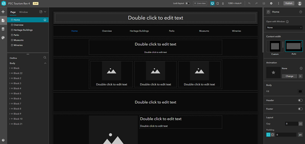
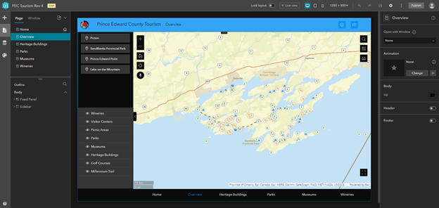

Our initial topic idea was designing a web application, using Experience Builder, to display
nesting and wetland habitats of Blanding's Turtles on the South Shore of Prince Edward County.
This is the topic of our groups collaborative project and we thought that it'd be nice to get a
head start.
However, after discussing it with Shawn and within the group we decided on changing
our topic to be Tourism in Prince Edward County instead. Tourism data was more readily available,
and we were still able to experiement with Experience Builder, the application we will be using during
our collab.
include setting up an AGOL group in this section
Experience Builder requires external data to fill the 'map' portion of its interface. Our group created the map
from all of our tourism data layers within ArcGIS Online.
1. Layers were added to a new map using Map Viewer in ArcGIS Online - The Wineries, Parks, Museums, Heritage Buildings, Trails, Golf Courses, Monuments,
Picnic Areas, and Visitor Information layers were all added into a new web map.
2. Base map was selected - Our group decided to use the Topographic Basemap because it provided context while not distracting from the content
we were trying to highlight.
3. Symbology was altered for each layer - Each feature layers style was changed to one that best depicted while still being cohesive with the rest.
We settled on pictorial symbols for each layer; Wineries layer were depicted by grapes within a circle, Parks layer was depicted by trees within a circle
etc.
4. Attribute table data was edited for pop-ups - For our collaborative project our client wants pop-ups for information, therefore, we wanted to incorporate
that into this project to get practise. Attribute table data was altered within the "Configure Fields" tab in Map Viewer so that field names were displayed
as desired and then the "Configure pop-ups" tab, also within Map Viewer, was used to include only the fields that the public would need access to in the
pop-ups.
All edits were made so that the map would have intuitive symbology and a user-friendly experience.
In order to use Experience Builder collaboratively as a group, we would each work on the app separately, and upload our revision to our Web Group on ArcGIS Online. The next member would then take that revision open it in Experience Builder and add/ revise it before uploading their revision. During the course of this project, the team would also have video calls where one member would share their screen and the others would verbally assist in adding to the web app.
The first revision was very simple, the team imported our Web Map from ArcGIS Online into Experience Builder, added a title and Prince Edward Countys logo. Symbology was adjusted to a 'Dark Theme' since its much easier on the eyes and a filter widget was added with the intention of being able to turn on and off different layers so that users could choose which tourist attractions they were most interested in viewing. At the end of the first revision the filter widget was not working as intended; the layers would not turn on and off when clicked upon.
In the second revision we resolved the filter widget issue; the sequel stated needed to be changed from 'WHERE name IS NOT BLANK' to 'WHERE name IS BLANK'. The second revision also added Bookmark widgets for specific points of interest around Prince Edward County that would zoom the user to that location when clicked upon. Additionally, adding new 'pages' within the Experience Builder app was experimented with and the idea of having a map page and a information page was thought of. To get back and forth between pages we discovered the button widget, which would be needed on each page to travel back and forth between them.

The third revision was the team taking what we'd learned about the 'pages' feature and buttons widget and applying it so that the most interesting tourist attractions each had their
own page. To do this we needed to go back into ArcGIS Online and make sure each layer that was going to have a separate page also had its own Web Map, symbolized in the exact same
way as the original map to keep things consistent. We chose to do this for Wineries, Parks, Hertiage Buildings and Museums. Pages and buttons were then added into Experience Builder
for each of these four layers.
The same overall layout was applied to the individual layer pages; map in the center, title ribbon across the top, sidebar to the left and buttons along the bottom. However, instead of the filter widget on the sidebar, we used the list widget so that the names of all the attractions for that dataset were listed. When clicking on a name in the list it will zoom in and highlight the one you have selected.
 The fourth revision was mostly improving the layout of the third. The Info Page - Renamed the Home page was set-up as the one that opened first so that users could read about Prince Edward County tourism first, next the main map was renamed the Overview page and the buttons along the buttom were spaced and laid out the same on all pages to that the app was intuitive to use.
 